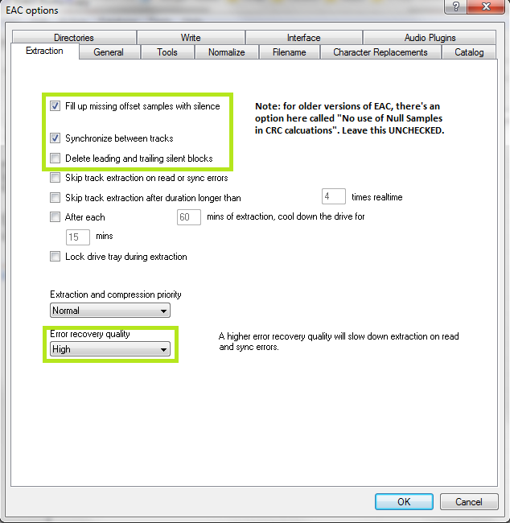
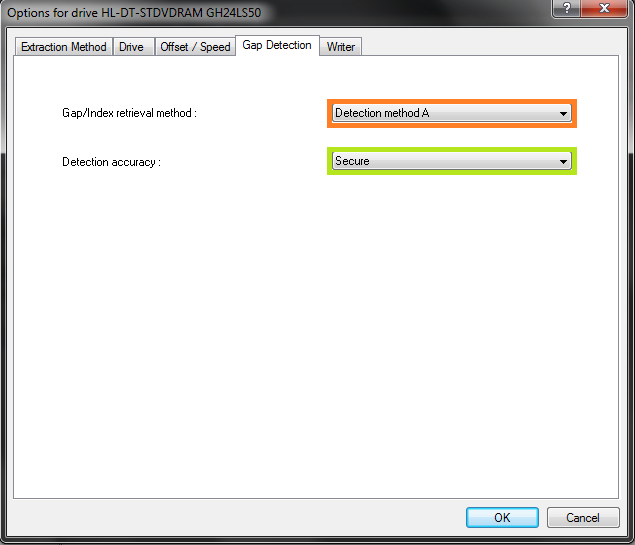

Download link: http://www.exactaudiocopy.de/en/index.php/resources/download/
Current version as of this guide: EAC 1.0 Beta 3.
This guide was made for EAC version 1.0 beta 3 and will not completely work with earlier versions (which are not recommended any longer). Versions 0.99 or earlier should use the blowfish guide.
Anything with a green outline around it is a required setting. Anything orange is required but depends on your drive. Anything unmarked is optional.
This is meant to be a no-frills guide with little extra info. A more comprehensive (but outdated) guide can be found here:
http://blowfish.be/eac
Step 1: Download and install EAC
Download the installer and fire it up.
Eventually you'll get to a screen like this. Make sure you install AccurateRip, CDRDAO, CTDB and freedb as a bare minimum. FLAC will be useful as well if you don't have it separately installed. GD3 is only useful if you want to pay for metadata results. I assume you don't.
Note: The above screenshot is from Beta 3. The new Beta 3 adds the option to include the CueTools Database Plugin. It is recommended to install it but not required. Full details for installation of the plugin on older versions is located in the appendix at the end of this guide.
Step 2: Start EAC
When you first start EAC, you'll see a screen like this one. Hit "Cancel". Next, put a popular CD into your drive, preferably not one that was recently released (a few months old at least). You'll see a window like the one below appear. If you have an older version of EAC or dBpoweramp installed, it's likely AccurateRip was already configured, and this may not appear.
Hit Configure. It may take a few minutes. Hit "Ok" afterward. Once again, if you have an older version of EAC or dBpoweramp installed, it's likely AccurateRip was already configured, and this may not appear.
Step 3: EAC Options
All of the options dialogs can be found from the EAC menu at the top of the screen.
Start with EAC Options. Any tabs not pictured are completely optional settings, or are irrelevant to ripping.

ake sure you set the green highlighted settings as shown. If you're using an older version of EAC, make sure "No use of null samples for CRC calculations is UNCHECKED. The rest is optional, choose as you will. Locking the drive tray during extraction isn't a bad idea though.

These settings are pretty much all optional and self explanatory. I'd recommend using Alternate CD play routines and disabling autostart though.
The "Create log files always in english language" is very important for our international users. This will let you keep EAC's language as your native one, but write the log file in English, allowing it to pass our logchecker without needing to be rescored manually.

If your drive is capable of reading UPC/ISRC codes and CD-Text (you can only really figure this out by trial and error), you're welcome to keep the top two options checked. Otherwise, uncheck them.
Other than that, these settings are pretty much ideal. I wouldn't recommend using more than 1 compressor thread even if you have a multicore computer. It doesn't take very long compared to the track extraction anyway. Note that in tests run by punkmeup, disabling the queue of external compressors in the background fixed an issue where EAC was generating WAV files instead of FLAC, so I've made that a required option. It should have no bearing on the rip quality. If rip queueing works for you (it does for me), feel free to leave it enabled.
Friends don't let friends normalize their EAC rips. Don't ever do it. It will instantly be given a 0% by the logchecker.
As shown in the screenshot above here is the proper way to name tracks.
Naming Convention : %tracknr2% - %title%
Check 'Use Various Artists Naming Scheme' and use : %tracknr2% - %artist% - %title%
The only difference acceptable here would be perhaps %tracknr2%. %title% if you prefer periods instead of dashes in the filenames. If you need track numbers to go into triple digits for some reason, use %tracknr3% instead.
Don't replace spaces by underscores. It looks ridiculous.
Step 4: Drive Options

Start by hitting "Detect Read Features...". This will actually take a few minutes. The only feature detection that actually matters is Accurate Stream. If your drive can use it, checkmark the setting (most modern drives have Accurate Stream). If it can't, don't.
Even if your drive doesn't cache audio, just do us a favour and leave that checked. Not only will it stop you from having to have each of your uploads rescored by hand, but it doesn't affect the audio quality at all. Yes, the rips take a bit longer with that setting enabled. Go watch TV or something while you wait.
Do not use C2, even if EAC thinks you can. Most drives have terrible C2 error implementation.

Hit "Autodetect read command now". It shouldn't take long. Leave everything else unchecked unless you're having problems. You can checkmark "CD-Text Read capable drive" if you want to test whether your drive can do it. If it can, great, otherwise, uncheck it. It's unlikely you'll ever use that feature anyway.

If you did the AccurateRip configuration at the start of this guide, the top half here will be greyed out. If not, you'll need to find your read offset correction from this list. Don't use a combined read/write offset.
If you want to figure out whether your drive needs "Overread into Lead-in and Lead-Out" checked, you can check by temporarily unchecking "Use AccurateRip with this drive". Stick a CD in the drive and hit "Detect read sample offset correction...". If you're just doing this for the Overread, see below:
blowfish.be wrote: Check "Overread Lead-In and Lead-Out" only if the test result says that your drive can overread from both the Lead-In and Lead-Out, or if it says Lead-Out and your offset correction is positive ,or if it says Lead-In and your offset correction is negative. Otherwise disable (uncheck) it.
Remember to check "Use AccurateRip with this drive" again once you're finished. AccurateRip is necessary for a 100% log.

Pretty much every drive should work with the settings shown. If yours stalls on detecting gaps or detects gaps that are obviously wrong (like 30 second gaps on a non-live album), try Detection method B or C. If A, B, and C all fail, you can switch "Secure" to "Accurate" and try again.
Step 5: Metadata Options
Here's where you pick your metadata provider. If you did install GD3, it'll be in the list. You can only rip 10 discs before you have to pay for a subscription though. Otherwise, you have a choice between the MusicBrainz plugin (CTDB), freedb plugin and EAC's native freedb support. I'm not really sure what the big difference is, I'm guessing it's the cover+lyrics. Anyway, change those settings above if you wish.
If you use EAC's native freedb instead, the settings should look like this. Make sure you put an email at the top, it doesn't need to be real. Hit "Get active freedb server list". Then checkmark the last option.
Step 6: Compression Options

Set up this tab exactly as shown. You'll have to browse to the path where you have flac.exe, if you installed it with EAC it's in C:\Program Files (x86)\Exact Audio Copy\FLAC\flac.exe. If you installed it separately it's wherever you installed it. The bit rate and high/low quality have no effect on the rip.
The commandline parameters have changed in this version, so this will look new to most of you. The commandline recommended for optimal completeness is this:
-8 -V -T "ARTIST=%artist%" -T "TITLE=%title%" -T "ALBUM=%albumtitle%" -T "DATE=%year%" -T "TRACKNUMBER=%tracknr%" -T "GENRE=%genre%" -T "PERFORMER=%albuminterpret%" -T "COMPOSER=%composer%" %haslyrics%--tag-from-file=LYRICS="%lyricsfile%"%haslyrics% -T "ALBUMARTIST=%albumartist%" -T "DISCNUMBER=%cdnumber%" -T "TOTALDISCS=%totalcds%" -T "TOTALTRACKS=%numtracks%" -T "COMMENT=%comment%" %source% -o %dest%
It takes no extra effort on your part, just copy and paste that into the additional commandline options and you're done.
Also, as of Beta 3 you may use the %tracknr1% variable instead of %tracknr% if you would like to have no leading zeroes in the track number field (like XLD does). tracknr1 will use, for example, '1' instead of '01'.
Leave everything unchecked except the last option.
Congrats! EAC is now properly set up! You may wish to save your settings in a profile by hitting "New" at the bottom of the screen. However, unless you're changing your settings frequently there's no need, EAC will remember all of this on next launch regardless.